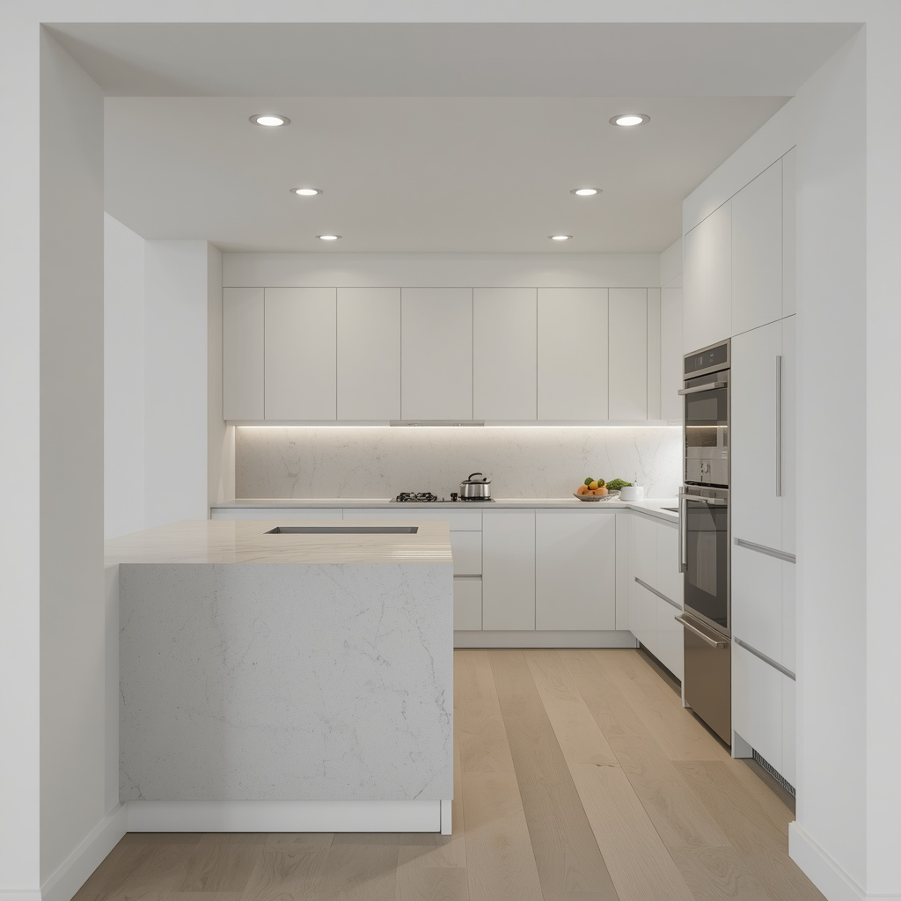
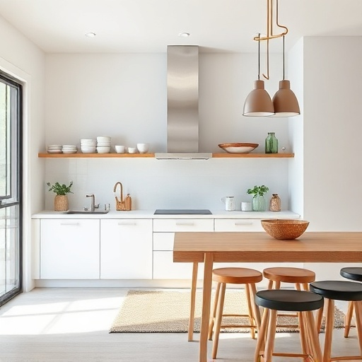

Dapur Kita
Desain dapur-dapur masa kini yang minimalis, namun modern, bersih dan elegan.




Jika anda tertarik dengan desain-desain dapur diatas dan ingin merealisasikannya menjadi dapur nyata, maka pilihlah desain yang paling sederhana dan dibuat dengan menggunakan bahan-bahan seadanya. Tidak perlu mewah, karena penulis tidak mengajak kepada kemewahan dunia.
Gambar-gambar diatas hanya sebagai hiburan semata, namun mengajak hidup bersih, tertata rapi, dan menjaga keharmonisan rumah tangga.